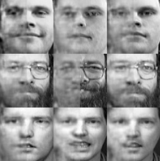
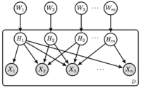
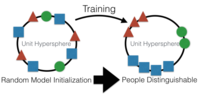
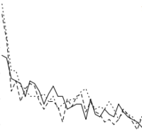

Mathematical engineer, particularly interested in graph theory, Markov chains, stochastic processes and randomised optmisation algorithms. Currently working on crowdsourcing, human computation and privacy issues in recommender systems. Also interested in high performance parallel computing and big data analysis.
| Apr 2016 - Present |
Carnegie Mellon University, Prof. Zico Kolter
Machine learning and optimization
|
| Aug 2014 - Apr 2016 |
Carnegie Mellon University, Prof. Mahadev Satyanarayanan
Applied machine learning and mobile systems
|
| May 2012 - May 2014 |
Virginia Tech, Prof. Jules White
Mobile systems, cyber-physical systems, and security
|
| Jan 2013 - May 2014 |
Virginia Tech, Prof. Layne Watson
Scientific computing, global/stochastic optimization, and bioinformatics
|
| Nov 2012 - Mar 2014 |
Virginia Tech, Prof. Binoy Ravindran
Heterogeneous compilers
|
|  |
Input Convex Neural Networks
B. Amos, L. Xu, and J. Kolter
arXiv 2016
[1]
[abs] [pdf] [code]
|
|  |
Collapsed Variational Inference for Sum-Product Networks
H. Zhao, T. Adel, G. Gordon, and B. Amos
ICML 2016
[2]
[abs] [pdf]
Sum-Product Networks (SPNs) are probabilistic inference machines that admit
exact inference in linear time in the size of the network. Existing
parameter learning approaches for SPNs are largely based on the maximum
likelihood principle and hence are subject to overfitting compared to
more Bayesian approaches. Exact Bayesian posterior inference for SPNs is
computationally intractable. Both standard variational inference and
posterior sampling for SPNs are computationally infeasible even for
networks of moderate size due to the large number of local latent
variables per instance. In this work, we propose a novel deterministic
collapsed variational inference algorithm for SPNs that is
computationally efficient, easy to implement and at the same time allows
us to incorporate prior information into the optimization formulation.
Extensive experiments show a significant improvement in accuracy compared
with a maximum likelihood based approach.
|
|  |
OpenFace: A general-purpose face recognition library with mobile applications
B. Amos, B. Ludwiczuk, and M. Satyanarayanan
CMU 2016
[3]
[abs] [pdf] [code]
Cameras are becoming ubiquitous in the Internet of Things (IoT) and
can use face recognition technology to improve context. There is a
large accuracy gap between today’s publicly available face recognition
systems and the state-of-the-art private face recognition
systems. This paper presents our OpenFace face recognition library
that bridges this accuracy gap. We show that OpenFace provides
near-human accuracy on the LFW benchmark and present a new
classification benchmark for mobile scenarios. This paper is intended
for non-experts interested in using OpenFace and provides a light
introduction to the deep neural network techniques we use.
We released OpenFace in October 2015 as an open source library under
the Apache 2.0 license. It is available at:
http://cmusatyalab.github.io/openface/
|
|  |
QNSTOP-QuasiNewton Algorithm for Stochastic Optimization
B. Amos, D. Easterling, L. Watson, W. Thacker, B. Castle, and M. Trosset
VT 2014
[4]
[abs] [pdf]
QNSTOP consists of serial and parallel (OpenMP) Fortran 2003 codes for the
quasi-Newton stochastic optimization method of Castle and Trosset. For
stochastic problems, convergence theory exists for the particular
algorithmic choices and parameter values used in QNSTOP. Both the parallel
driver subroutine, which offers several parallel decomposition strategies, and the serial driver subroutine can be used for stochastic optimization or
deterministic global optimization, based on an input switch. QNSTOP is
particularly effective for “noisy” deterministic problems, using only
objective function values. Some performance data for computational systems
biology problems is given.
|
| May 2014 - Aug 2014 |
Adobe Research, Data Scientist Intern |
-
I built a web analytics processing engine using Scala, Spark, Spray, Parquet, and HDFS.
|
| Dec 2013 - Jan 2014 |
Snowplow Analytics, Software Engineer Intern |
|
|
| May 2013 - Aug 2013 |
Qualcomm, Software Engineer Intern |
|
|
| May 2012 - Aug 2012 |
Phoenix Integration, Software Engineer Intern |
|
|
| Jan 2011 - Aug 2011 |
Sunapsys, Network Administrator Intern |
-
Internship in high school to replace Windows domain, mail, DHCP, and DNS servers with virtual Linux servers using KVM and virsh.
|
| Languages |
Bash, C, C++, CSS, Matlab, JavaScript, Fortran, HTML, LaTeX, Mathematica, Python, R
|
| Frameworks |
Spark, Cloudera, Pandas, NumPy, SciPy, SimPy, scikit-learn
|
| Algorithm design |
Design, convergence rate and complexity analysis of decentralised algorithms on graphs.
|
| Convex optimisation |
Convex optimisation, with application to discrete problems. Numerical methods for approximate solution of optimisation problems.
|
| Data Mining |
Monte Carlo Markov chains techniques for data mining and feature selection, applied to medical diagnostic and artificial olfaction.
|
| Privacy in recommender systems |
Probabilistic matrix factorisation applied to recommender systems, with focus on privacy issues.
|
| Simulatots |
Event-based simulators design for wireless network analysis.
|
| Statistical inference |
Bayesian modelling and exploratory data analysis, with focus on big data.
|
Privacy mediators: helping IoT cross the chasm
N. Davies, N. Taft, M. Satyanarayanan, S. Clinch, and B. Amos
HotMobile 2016
[W1]
[abs] [pdf]
Unease over data privacy will retard consumer acceptance of IoT
deployments. The primary source of discomfort is a lack of user
control over raw data that is streamed directly from sensors to the
cloud. This is a direct consequence of the over-centralization of
today’s cloud-based IoT hub designs. We propose a solution that
interposes a locally-controlled software component called a privacy
mediator on every raw sensor stream. Each mediator is in the same
administrative domain as the sensors whose data is being collected, and dynamically enforces the current privacy policies of the owners
of the sensors or mobile users within the domain. This solution necessitates
a logical point of presence for mediators within the administrative
boundaries of each organization. Such points of presence
are provided by cloudlets, which are small locally-administered data
centers at the edge of the Internet that can support code mobility.
The use of cloudlet-based mediators aligns well with natural personal
and organizational boundaries of trust and responsibility.
|
Early Implementation Experience with Wearable Cognitive Assistance Applications
Z. Chen, L. Jiang, W. Hu, K. Ha, B. Amos, P. Pillai, A. Hauptmann, and M. Satyanarayanan
WearSys 2015
[W2]
[abs] [pdf]
A cognitive assistance application combines a wearable device such
as Google Glass with cloudlet processing to provide step-by-step
guidance on a complex task. In this paper, we focus on user assistance
for narrow and well-defined tasks that require specialized
knowledge and/or skills. We describe proof-of-concept implementations
for four different tasks: assembling 2D Lego models, freehand
sketching, playing ping-pong, and recommending context-relevant
YouTube tutorials. We then reflect on the difficulties we faced in
building these applications, and suggest future research that could
simplify the creation of similar applications.
|
The Case for Offload Shaping
W. Hu, B. Amos, Z. Chen, K. Ha, W. Richter, P. Pillai, B. Gilbert, J. Harkes, and M. Satyanarayanan
HotMobile 2015
[W3]
[abs] [pdf]
When offloading computation from a mobile device, we show
that it can pay to perform additional on-device work in order
to reduce the offloading workload. We call this offload shaping, and demonstrate its application at many different levels
of abstraction using a variety of techniques. We show that
offload shaping can produce significant reduction in resource
demand, with little loss of application-level fidelity
|
Performance study of Spindle, a web analytics query engine implemented in Spark
B. Amos and D. Tompkins
CloudCom 2014
[W4]
[abs] [pdf] [code]
|
Global Parameter Estimation for a Eukaryotic Cell Cycle Model in Systems Biology
T. Andrew, B. Amos, D. Easterling, C. Oguz, W. Baumann, J. Tyson, and L. Watson
SummerSim 2014
[W5]
[abs] [pdf]
The complicated process by which a yeast cell divides, known as the cell
cycle, has been modeled by a system of 26 nonlinear ordinary differential
equations (ODEs) with 149 parameters. This model captures the chemical
kinetics of the regulatory networks controlling the cell division process
in budding yeast cells. Empirical data is discrete and matched against
discrete inferences (e.g., whether a particular mutant cell lives or dies)
computed from the ODE solution trajectories. The problem of
estimating the ODE parameters to best fit the model to the data is a
149-dimensional global optimization problem attacked by the deterministic
algorithm VTDIRECT95 and by the nondeterministic algorithms differential
evolution, QNSTOP, and simulated annealing, whose performances are
compared.
|
Fortran 95 implementation of QNSTOP for global and stochastic optimization
B. Amos, D. Easterling, L. Watson, B. Castle, M. Trosset, and W. Thacker
SpringSim (HPC) 2014
[W6]
[abs] [pdf]
A serial Fortran 95 implementation of the QNSTOP algorithm is presented.
QNSTOP is a class of quasi-Newton methods for stochastic optimization with
variations for deterministic global optimization. This discussion provides
results from testing on various deterministic and stochastic optimization
functions.
|
Edge Analytics in the Internet of Things
M. Satyanarayanan, P. Simoens, Y. Xiao, P. Pillai, Z. Chen, K. Ha, W. Hu, and B. Amos
IEEE Pervasive Computing 2015
[M1]
[abs] [pdf]
High-data-rate sensors, such as video cameras, are becoming ubiquitous in the
Internet of Things. This article describes GigaSight, an Internet-scale
repository of crowd-sourced video content, with strong enforcement of privacy
preferences and access controls. The GigaSight architecture is a federated
system of VM-based cloudlets that perform video analytics at the edge of the
Internet, thus reducing the demand for ingress bandwidth into the cloud.
Denaturing, which is an owner-specific reduction in fidelity of video content
to preserve privacy, is one form of analytics on cloudlets. Content-based
indexing for search is another form of cloudlet-based analytics. This article
is part of a special issue on smart spaces.
|
Bad Parts: Are Our Manufacturing Systems at Risk of Silent Cyberattacks?
H. Turner, J. White, J. Camelio, C. Williams, B. Amos, and R. Parker
IEEE Security & Privacy 2015
[M2]
[abs] [pdf]
Recent cyberattacks have highlighted the risk of physical equipment operating
outside designed tolerances to produce catastrophic failures. A related
threat is cyberattacks that change the design and manufacturing of a
machine’s part, such as an automobile brake component, so it no longer
functions properly. These risks stem from the lack of cyber-physical models
to identify ongoing attacks as well as the lack of rigorous application of
known cybersecurity best practices. To protect manufacturing processes in the
future, research will be needed on a number of critical cyber-physical
manufacturing security topics.
|
OpenFace: A general-purpose face recognition library with mobile applications
B. Amos, B. Ludwiczuk, and M. Satyanarayanan
CMU 2016
[T1]
[abs] [pdf] [code]
Cameras are becoming ubiquitous in the Internet of Things (IoT) and
can use face recognition technology to improve context. There is a
large accuracy gap between today’s publicly available face recognition
systems and the state-of-the-art private face recognition
systems. This paper presents our OpenFace face recognition library
that bridges this accuracy gap. We show that OpenFace provides
near-human accuracy on the LFW benchmark and present a new
classification benchmark for mobile scenarios. This paper is intended
for non-experts interested in using OpenFace and provides a light
introduction to the deep neural network techniques we use.
We released OpenFace in October 2015 as an open source library under
the Apache 2.0 license. It is available at:
http://cmusatyalab.github.io/openface/
|
Are Cloudlets Necessary?
Y. Gao, W. Hu, K. Ha, B. Amos, P. Pillai, and M. Satyanarayanan
CMU 2015
[T2]
[abs] [pdf]
We present experimental results from Wi-Fi and 4G LTE networks to validate the
intuition that low end-to-end latency of cloud services improves application
response time and reduces energy consumption on mobile devices. We focus
specifically on computational offloading as a cloud service. Using a wide
range of applications, and exploring both pre-partitioned and dynamically
partitioned approaches, we demonstrate the importance of low latency for
cloud offload services. We show the best performance is achieved by
offloading to cloudlets, which are small-scale edge-located data centers. Our
results show that cloudlets can improve response times 51% and reduce energy
consumption in a mobile device by up to 42% compared to cloud offload.
|
Adaptive VM handoff across cloudlets
K. Ha, Y. Abe, Z. Chen, W. Hu, B. Amos, P. Pillai, and M. Satyanarayanan
CMU 2015
[T3]
[abs] [pdf]
Cloudlet offload is a valuable technique for ensuring low end-to-end latency of
resource-intensive cloud processing for many emerging mobile applications.
This paper examines the impact of user mobility on cloudlet offload, and
shows that even modest user mobility can result in significant network
degradation. We propose VM handoff as a technique for seamlessly transferring
VMencapsulated execution to a more optimal offload site as users move. Our
approach can perform handoff in roughly a minute even over limited WANs by
adaptively reducing data transferred. We present experimental results to
validate our implementation and to demonstrate effectiveness of adaptation to
changing network conditions and processing capacity
|
QNSTOP-QuasiNewton Algorithm for Stochastic Optimization
B. Amos, D. Easterling, L. Watson, W. Thacker, B. Castle, and M. Trosset
VT 2014
[T4]
[abs] [pdf]
QNSTOP consists of serial and parallel (OpenMP) Fortran 2003 codes for the
quasi-Newton stochastic optimization method of Castle and Trosset. For
stochastic problems, convergence theory exists for the particular
algorithmic choices and parameter values used in QNSTOP. Both the parallel
driver subroutine, which offers several parallel decomposition strategies, and the serial driver subroutine can be used for stochastic optimization or
deterministic global optimization, based on an input switch. QNSTOP is
particularly effective for “noisy” deterministic problems, using only
objective function values. Some performance data for computational systems
biology problems is given.
|

 Alessandro Checco
Alessandro Checco